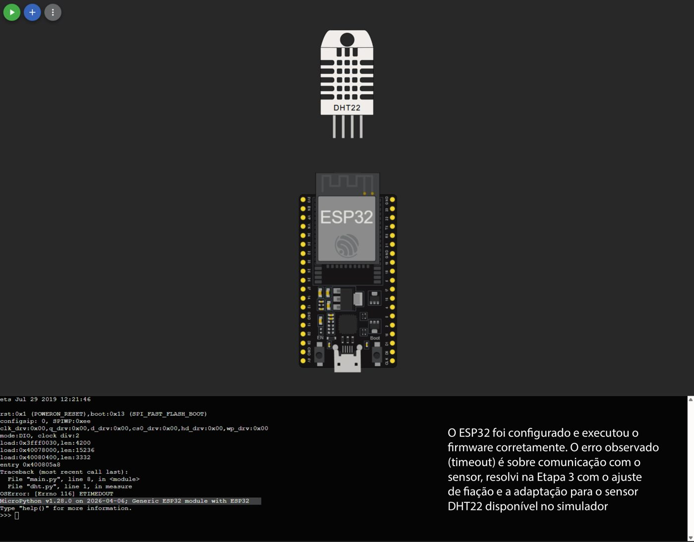
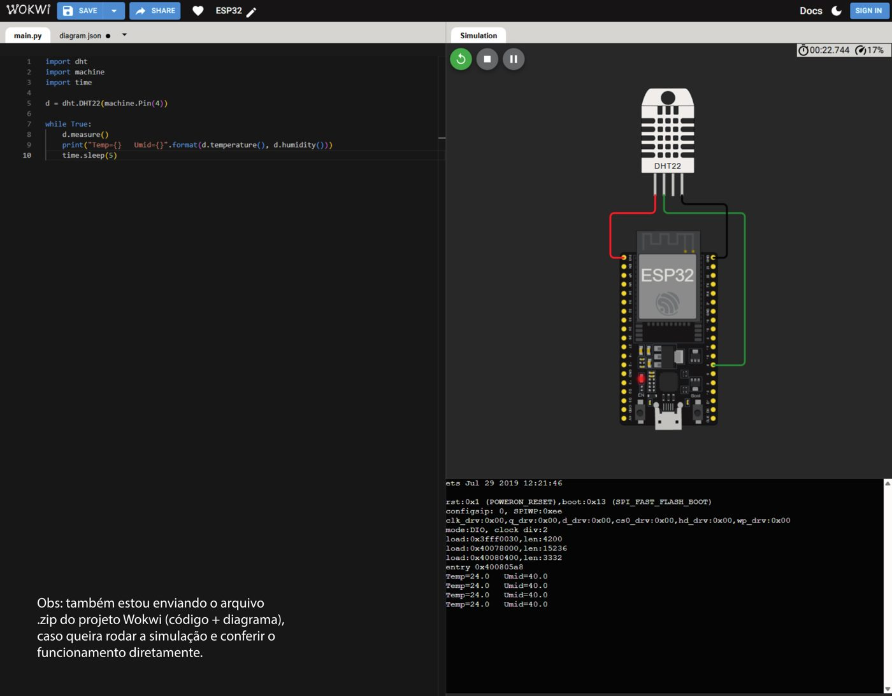

iot fundamentals · graded assignments 1 and 2 · pucpr 2026 · 4 min read
ESP32 weather monitor: from simulator to hardware
It started as a sensor reading in a simulator and ended with the kit assembled: an ESP32 that reads temperature and humidity, switches on a relay when a limit is exceeded and sends everything to the cloud every 20 seconds.
problem
Read temperature and humidity, act when a limit is exceeded and store the data in the cloud.
my role
I programmed it in MicroPython, tested it in the simulator and built the circuit with the kit.
result
The ESP32 switches the relay on its own and sends readings to ThingSpeak every 20 seconds.
The topic
The two graded assignments in IoT Fundamentals are the same project in two phases. In the first, the ESP32 only read the sensor, all in Wokwi, an in-browser board simulator. In the second, I built the real kit, with an ESP32, a DHT11 sensor and a relay, programmed in MicroPython, and connected everything to the network and the cloud.
Part 1 · reading in the simulator
01
Set up the environment
Wokwi doesn't have the DHT11, which is the sensor in the class kit, only the DHT22. Both use a similar protocol, so I just swapped the class in the code and kept the same logic.
step 1: ESP32 and DHT22 in Wokwi
02
Configure the ESP32
The board booted MicroPython fine, but the reading timed out. The problem wasn't the board, it was the communication with the sensor.

step 2: firmware running and the timeout in the console
03
Read the sensor
I fixed the wiring, with power on 3V3, data on pin 4 and ground on GND. The reading showed up in the console every 5 seconds.

step 3: readings arriving in the console
main.py
import dht
import machine
import time
d = dht.DHT22(machine.Pin(4))
while True:
d.measure()
print("Temp={} Umid={}".format(d.temperature(), d.humidity()))
time.sleep(5)
The connection lives in a separate file, wifi_lib.py: it enables the interface, tries to connect and waits until it works. The main program just calls conecta().
05
Read the sensor
The DHT11 is on pin 4. Each cycle takes one temperature reading and one humidity reading.
06
Decide and act
Above 31 °C or 70% humidity, the relay on pin 2 turns on. Below that, it turns off. It's the same logic as irrigation that turns on when the soil dries out.
07
Send to the cloud
Each reading goes to ThingSpeak in an HTTP request, in fields 1 and 2 of the channel, where it becomes a chart.
08
Don't freeze on errors
The whole cycle is wrapped in a try/except. If the reading or the network fails, the program reports it and tries again 20 seconds later.
main.py (shortened)
while True:
try:
sensor.measure()
temp = sensor.temperature()
umid = sensor.humidity()
if temp > LIMITE_TEMP or umid > LIMITE_UMID:
rele.value(1)
else:
rele.value(0)
url = "https://api.thingspeak.com/update?api_key={}&field1={}&field2={}".format(API_KEY, temp, umid)
urequests.get(url).close()
except Exception as e:
print("Erro:", e)
time.sleep(20)